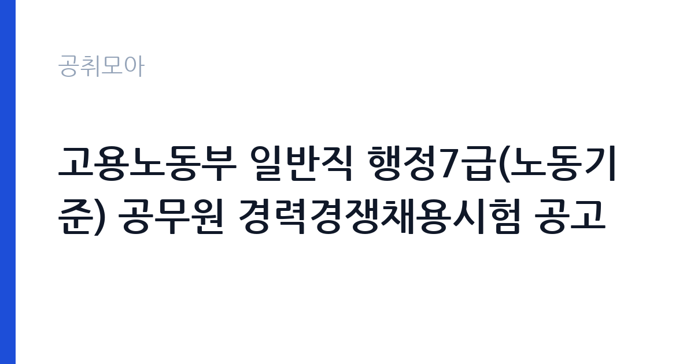

[국가기관] 고용노동부 일반직 행정7급(노동기준) 공무원 경력경쟁채용시험 공고
고용노동부 · 전국 · 마감 2026-10-30 (D-18) · 출처 나라일터

한눈에 보는 모집 조건
| 기관 | 고용노동부 |
|---|---|
| 공고명 | 고용노동부 일반직 행정7급(노동기준) 공무원 경력경쟁채용시험 공고 |
| 고용형태 | 정규직 |
| 근무지 | 전국 |
| 게시일 | 2026-10-12 |
| 마감일 | 2026-10-30 (D-18) |
지원자격, 이렇게 읽으세요
- 행정7급 200명
- 접수 ~2026-10-30 마감
- 세부 조건은 원문 공고문 확인
모집 분야는 노동기준이며 공인노무사 자격증을 보유한 분이 대상입니다. 세부 응시자격과 우대 요건, 경력 인정 기준은 각 기관별 공고문을 반드시 확인하시기 바랍니다. 경력경쟁채용에서는 자격증 취득 이후의 직무 연관 경력이 중요한 평가 요소가 되므로, 노무법인이나 기업 인사노무 부서, 공공기관 노무 관련 부서 경력을 체계적으로 정리하시기 바랍니다. 지원 시 주의하실 점은 기관별 중복 지원 가능 여부입니다. 서울청과 경기청, 중부청, 강원지청, 부산청, 대구청, 광주청, 대전청 등 각 기관별로 채용 인원을 배정하므로, 중복 지원 허용 여부와 희망 근무지 선택 방식을 공고문에서 확인하시기 바랍니다. 경력증명서에는 근무 기간과 담당 업무가 명시되어야 하며, 내용이 불명확하면 서류 심사에서 불이익을 받을 수 있습니다. 담당 부서 연락처도 기관별로 다르므로 문의 전 해당 기관 번호를 확인하시기 바랍니다.
이 공고의 포인트
해당 공고의 첫 번째 포인트는 200명이라는 대규모 선발입니다. 7급 경채에서 세 자릿수 선발은 흔치 않은 기회이며, 합격 가능성이 상대적으로 높은 시험입니다. 두 번째 포인트는 정년이 보장되는 국가공무원 신분입니다. 일반직 행정7급으로 임용되면 국가공무원법 제74조에 따른 정년이 적용됩니다. 세 번째 포인트는 경쟁 풀이 공인노무사 자격 소지자로 한정된다는 점입니다. 일반 7급 공채처럼 불특정 다수와 경쟁하는 구조가 아니라 자격 보유자끼리만 겨루므로, 자격증을 보유한 분들께는 실질 경쟁률이 낮아지는 효과가 있습니다. 네 번째 포인트는 전국 근무지 선택입니다. 각 지방청별로 인원을 배정하므로 거주지와 생활권을 고려한 전략적 지원이 가능합니다.
전형은 어떻게 진행되나
전형 방법의 세부 내용은 각 기관별 공고문에서 확인하시기 바랍니다. 국가공무원 경력경쟁채용은 일반적으로 서류전형과 면접시험의 순서로 진행됩니다. 서류전형에서는 응시자격 충족 여부를 심사하며, 응시 인원이 선발 예정 인원의 일정 배수를 초과하면 서류 평가 기준에 따라 합격자를 결정합니다. 면접시험에서는 공무원으로서의 자세와 직무 수행 능력, 전문지식 응용 능력을 종합적으로 평가합니다. 평가 요소는 소통과 공감, 헌신과 열정, 창의와 혁신, 윤리와 책임, 직무 관련 능력으로 구성되는 경우가 많습니다. 자기소개서와 직무수행계획서를 토대로 질의응답이 이루어지므로, 노동기준 분야 실무 경험을 중심으로 답변을 준비하시기 바랍니다. 원서 접수 기간이 10월 26일부터 30일까지로 5일간이므로, 증빙 서류를 미리 준비해 두시기 바랍니다.
원문에서 확인한 전형 방식
공무원임용시험령 제3조 및 제47조에 따라 우수 인재의 공직유치를 위한 국가공무원 경력경쟁채용시험을 다음과 같이 공고하여 시행하오니 많은 응시 바랍니다. ㅇ모집분야: 노동기준(공인노무사) ㅇ선발직급: 일반직 행정7급 ㅇ채용인원: 총 200명(각 기관별 채용인원 등 공고문 참조) ㅇ근무장소: 전국(각 기관별 공고문 참조) ㅇ채용기간: 국가공무원법 제74조에 따른 정년 적용 ㅇ원서접수기간: 2026.10.26.(월) ~ 10.30.(금) ㅇ담당부서(연락처): 각 기관별 공고문 참조 - (서울청) 02-2250-5820 - (경기청) 031-259-0307 - (중부청) 032-460-4507 - (강원지청) 033-269-3564 - (부산청) 051-850-6341 - (대구청) 053-667-6308 - (광주청) 062-975-6262 - (대전청) 042-480-6242
이런 분께 추천해요
- 공인노무사 자격증을 보유하고 공직에서 노동기준 분야 전문가로 성장하고 싶은 분께 추천합니다.
- 노무법인과 기업 인사노무 부서 경력을 살려 정년이 보장되는 국가공무원으로 이직하고 싶은 분께 추천합니다.
- 전국 각 지방청 근무가 가능하고 근로감독과 노동법 집행 현장에서 일하고 싶은 분께 추천합니다.
지원 전 체크리스트
- 자격증 유효 여부입니다. 공인노무사 자격증 소지 여부를 최종시험일 기준으로 판단하는 경우가 많으니 공고문 기준일을 확인하시기 바랍니다.
- 기관별 중복 지원 가능 여부입니다. 여러 지방청에 동시 지원이 가능한지 공고문에서 확인하시기 바랍니다.
- 경력증명서 정비 항목입니다. 근무 기간과 담당 업무가 명시된 증명서를 발급받아 두시기 바랍니다.
- 접수 기간 준수 항목입니다. 10월 26일부터 30일까지로 짧으므로 마감일 접속 폭주를 고려해 초반 접수를 권장합니다.
모집 일정과 제출 타이밍
공고 게시일은 2026년 10월 12일이며 원서 접수 기간은 10월 26일부터 10월 30일까지입니다. 접수 시작 전 약 2주간을 서류 준비에 활용하시고, 경력증명서 발급처럼 시간이 걸리는 항목부터 처리하시기 바랍니다. 이후 서류전형과 면접시험 일정은 각 기관별 공고문과 나라일터 안내를 확인하시기 바랍니다. 최종합격자 발표 후 임용까지 신원조회와 결격사유 조회 절차가 이어지므로 전체 일정을 여유 있게 보시기 바랍니다.
직무 이해하기: 국가기관
노동기준 분야의 실무를 이해하면 지원서와 면접 준비가 수월해집니다. 고용노동부 노동기준 담당자는 근로기준법과 최저임금법 등 노동관계법 준수 여부를 지도하고 감독하는 업무를 맡습니다. 임금 체불과 장시간 근로, 부당노동행위 신고 사건 처리와 사업장 근로감독이 핵심 현장 업무입니다. 공인노무사로서 쌓은 노동법 해석과 상담, 분쟁 조정 경험이 현장에서 직접 활용됩니다. 지방청과 지청 단위로 근무하므로 관할 지역 사업장 특성에 맞는 감독 행정을 펼치게 됩니다. 진정 사건 처리와 같이 민원인과 직접 대면하는 업무가 많아 소통 역량과 원칙 준수 자세가 함께 요구됩니다.
자기소개서 작성 팁
자기소개서는 노무사로서의 실무 경험을 노동기준 행정과 연결하는 것이 핵심입니다. 임금과 근로시간, 인사노무 상담, 부당해고 구제 등 본인이 다뤘던 사건 유형과 처리 성과를 구체적으로 서술하시기 바랍니다. 직무수행계획서는 근로감독관으로서의 포부를 담는 항목이므로, 관할 지역 노동 현안과 개선 방향을 제시하면 좋은 평가를 받을 수 있습니다. 공직 지원 동기에서는 사적 대리와 공적 집행의 차이를 이해하고 있다는 점을 보여주시기 바랍니다. 노무사의 전문성을 살려 노동 약자 보호와 법 준수 문화 확산에 기여하겠다는 방향이 설득력이 있습니다. 지원 기관의 지역 특성을 조사해 해당 지역 노동 현안을 언급하면 진정성이 높아집니다.
면접 준비 포인트
면접에서는 노동법 전문지식과 공무원으로서의 자세가 핵심 평가 요소입니다. 근로기준법 주요 조문과 최근 개정 사항, 최저임금과 근로시간 쟁점에 대한 견해를 묻는 질문에 대비하시기 바랍니다. 실제 상담과 사건 처리 경험을 묻는다면 사실관계 파악과 법리 적용, 당사자 조율 과정을 구조적으로 답변하시기 바랍니다. 공무원으로서의 윤리 의식과 민원 대응 자세를 묻는 질문도 빈번하므로, 감정적인 민원인을 대한 경험과 원칙을 지킨 사례를 준비하시기 바랍니다. 조직 적합성 항목에서는 지방청 현장 근무에 대한 의지와 전국 전보 가능성을 수용하는 태도를 보여주시는 것이 좋습니다.
급여·근무조건 읽는 법
급여 수준은 공무원보수규정 봉급표로 확인할 수 있습니다. 2026년 일반직 행정7급 1호봉 기본급은 월 2,317,100원이며, 9급 1호봉 기본급은 월 2,133,000원입니다. 실제 초임호봉은 개인의 경력과 병역 복무 기간을 환산해 획정하므로, 경력자는 1호봉보다 높은 호봉에서 시작합니다. 기본급에 정액급식비와 직급보조비, 명절휴가비, 초과근무수당 등이 더해져 세전 총보수가 정해지며, 참고로 2026년 9급 초임의 수당 포함 연 보수는 약 3,428만원으로 발표된 바 있습니다. 실수령액은 공무원연금 기여금과 세금, 건강보험료 공제 후 금액이므로 봉급표 금액보다 낮아집니다. 출처는 인사혁신처 2026년 공무원봉급표와 보수 인상 보도자료입니다.
자주 묻는 질문
- 공인노무사 자격증이 없으면 지원할 수 없습니까?
모집 분야가 노동기준이며 자격 소지자를 대상으로 하므로, 세부 응시자격은 각 기관별 공고문에서 반드시 확인하시기 바랍니다. - 근무지는 어떻게 정해집니까?
각 지방청과 지청별로 채용 인원을 배정하므로, 지원 시 선택한 기관의 관할 지역에서 근무하게 됩니다. 세부 내용은 공고문을 확인하시기 바랍니다. - 7급 경채도 정년이 보장됩니까?
일반직 국가공무원으로 임용되므로 국가공무원법상 정년이 적용됩니다. 임기제와 달리임기 제한이 없습니다.
함께 보면 좋은 공고
[국가기관] 2026년도 정부청사관리본부 방호직 공무원 경력경쟁채용시험 공고 — 마감 2026-10-22[국가기관] 2026년도 제3회 양구우체국 상시계약집배원(계약직) 채용 재공고 — 마감 2026-10-19[국가기관] 2026년도 국가공무원 경력경쟁채용(공업9급) 공고 — 마감 2026-10-23출처: 나라일터 공개정보를 바탕으로 공취모아가 정리한 안내글입니다. 모집 조건·일정은 변경될 수 있으니 지원 전 반드시 원문 공고문을 확인하세요. 본 글은 정보 제공용이며 합격을 보장하지 않습니다.